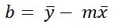

Add points to the graph by clicking the grid. These points create a scatter plot.
After adding at least 2 points, a line will appear. This line is the 'line of best fit' for the graph.
The method for creating this is known as the 'Ordinary Least Squares' algorithm.
It calculates the slope and y-intercept using a specific formula.
The formula is:
And,
Where:
x = specific x-value in a point
= Average x-value of all points
= Average y-value of all points
= Summation. Do following expression n times.
Add Point with Coordinates (, )
The Line of Best fit is: